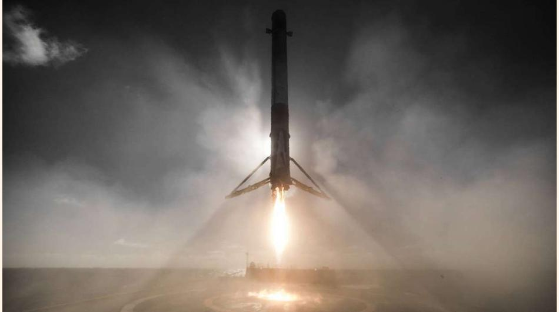
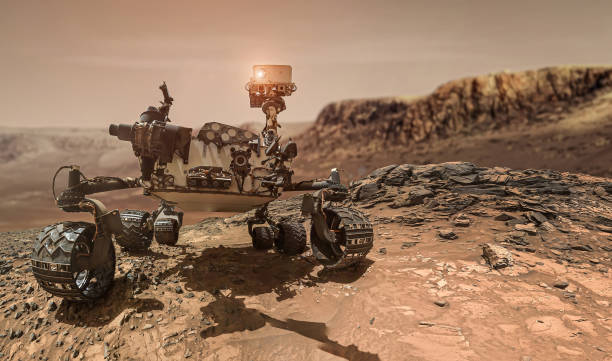
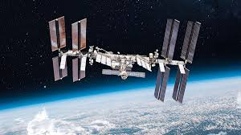

Tecnología Espacial Actual
La tecnología espacial ha avanzado significativamente, permitiendo misiones más largas y complejas.
Tecnologías destacadas:
- Cohetes Reutilizables: Falcon 9 de SpaceX revolucionó el acceso al espacio con su primera etapa reutilizable.
- Satélites Avanzados: Redes como Starlink ofrecen conectividad global.
- Rovers Marcianos: Perseverance y Curiosity, que estudian Marte buscando rastros de vida pasada.
- Estación Espacial Internacional: Laboratorio orbital que ha permitido experimentos científicos cruciales.


